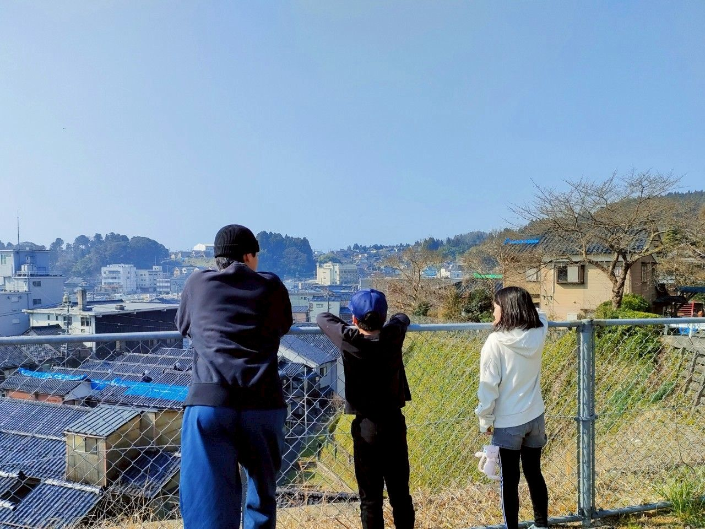
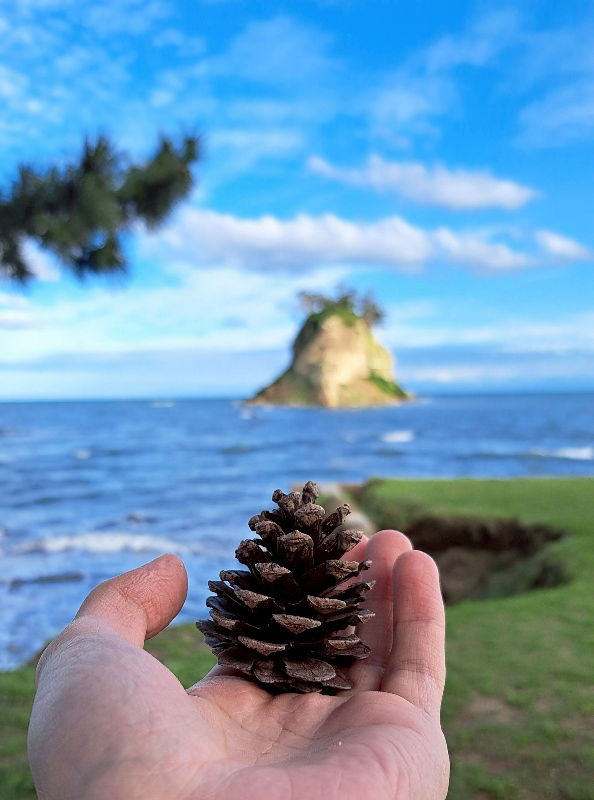
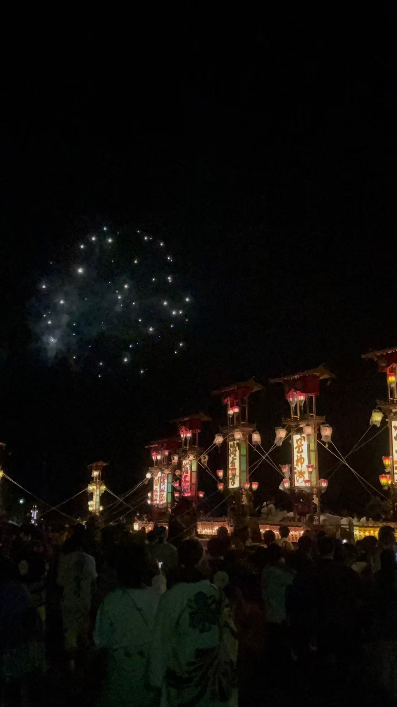
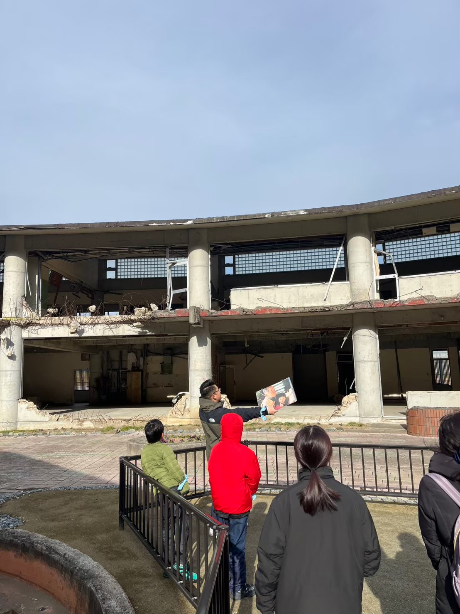
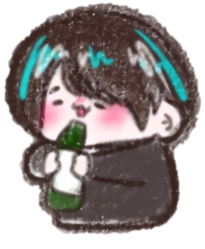

ただいまと思える
場所を作る

そよかぜとは？
人と地域をやさしくつなぐ、学生主体のボランティア団体です。

活動エリア
能登・東北を中心に、全国の地域と関東をつなぐ活動を行っています。

大切にしていること
「楽しい」を起点に、防災や復興への関心につなげることを大切にしています。
団
体
概
要
代
表
挨
拶


物販
聖学院大学
開催日：2025.11.19
サンタの格好をした学生と能登の支援品を販売しました。
うまいもん商店という名前は私たちが物販をする時に使っているお店の名前です。

つながり
能登
2025.07.4〜2025.07.6
あばれ祭り 美しく輝く切子たち

つながり
東京
開催日：2025.09.05
東北スタディーツアーにて見学している様子。
活
動
紹
介
2025年7月6日
【美味しいお菓子】能登の名物・ビーバー
サクッと香ばしくて一度食べたら止まらない
僕たちそよかぜも遠征のたびについ買っちゃうお菓子です！
連載：魅力発信

能登

そよかぜ Instagram
こちらの投稿を押すと別ページへ飛ばされます。
そちらでも投稿内容が確認できますが
公式インスタグラムに飛びたい場合はお問い合わせにあるインスタグラムからお願いいたします。
見学・参加・団体連携など、初めての方も歓迎しています。
以下の連絡方法よりお問い合わせください。
Gmailアドレス
soyokaze@gmail.com
お
問
い
合
わ
せ